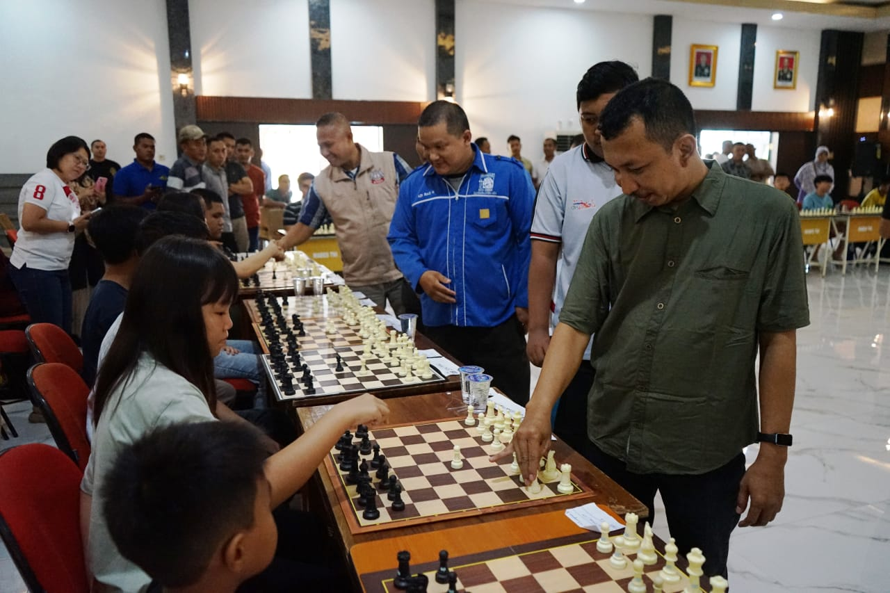

Prestasi Catur SMP: Belajar Berpikir Strategis
29 April 2026
Perjalanan prestasi saya dimulai sejak bangku SMP. Saat itu, saya mengikuti perlombaan catur dan berhasil masuk ke dalam 10 besar. Pengalaman ini bukan hanya soal papan dan bidak, tetapi juga tentang mengasah pikiran untuk melihat beberapa langkah ke depan, mengantisipasi gerakan lawan, dan membuat keputusan yang tepat di saat kritis.
Kompetisi ini melatih saya untuk berpikir strategis, meningkatkan konsentrasi, serta belajar mengambil keputusan dengan tenang di bawah tekanan. Setiap partai catur mengajarkan kesabaran dan ketahanan mental, skill yang tak ternilai dalam kehidupan sehari-hari maupun studi akademik saya kemudian hari. Saya belajar bahwa kemenangan sejati bukan hanya soal skor, tapi pertumbuhan pribadi yang didapat.
Pengalaman ini menjadi fondasi bagi kemampuan analisis saya di berbagai bidang, mulai dari pemecahan masalah kompleks hingga merencanakan proyek jangka panjang. Catur mengajarkan saya bahwa setiap pilihan memiliki konsekuensi, dan strategi yang baik selalu dimulai dari visi yang jelas. Hingga kini, logika catur masih menjadi panduan dalam menghadapi tantangan di dunia informatika dan teknologi.
Semua ini membentuk karakter saya menjadi lebih disiplin, fokus, dan siap menghadapi persaingan ketat di masa depan.